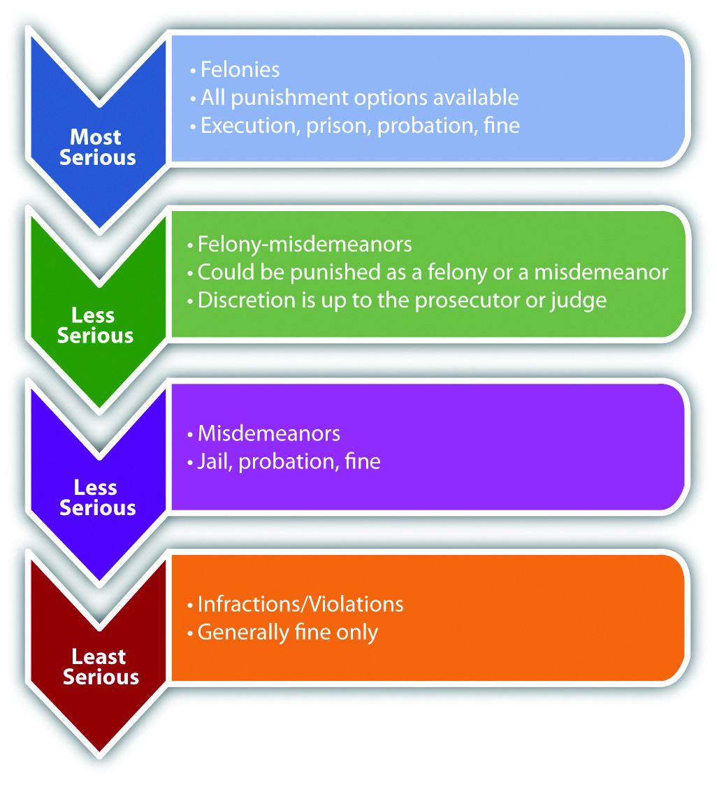

Crimes can be classified in many ways. Crimes also can be grouped by subject matter. For example, a crime like assault, battery, or rape tends to injure another person’s body, so it can be classified as a “crime against the person.” If a crime tends to injure a person by depriving him or her of property or by damaging property, it can be classified as a “crime against property.” These classifications are basically for convenience and are not imperative to the study of criminal law.
More important and substantive is the classification of crimes according to the severity of punishment. This is called gradingClassification of crimes by the severity of punishment.. Crimes are generally graded into four categories: feloniesThe most serious crimes, which are graded the highest., misdemeanorsCrimes that are graded lower than felonies but higher than infractions., felony-misdemeanorsCrimes that can be prosecuted as a felony or a misdemeanor, depending on the circumstances., and infractionsThe least serious crimes, which are graded the lowest. Also called violations.. Often the criminal intent element affects a crime’s grading. Malum in seCrimes that are evil in nature. crimes, murder, for example, are evil in their nature and are generally graded higher than malum prohibitumCrimes that are regulatory in nature. crimes, which are regulatory, like a failure to pay income taxes.
Felonies are the most serious crimes. They are either supported by a heinous intent, like the intent to kill, or accompanied by an extremely serious result, such as loss of life, grievous injury, or destruction of property. Felonies are serious, so they are graded the highest, and all sentencing options are available. Depending on the jurisdiction and the crime, the sentence could be execution, prisonIncarceration facility appropriate for felonies and operated by the state or federal government. time, a fine, or alternative sentencing such as probation, rehabilitation, and home confinement. Potential consequences of a felony conviction also include the inability to vote, own a weapon, or even participate in certain careers.
Misdemeanors are less serious than felonies, either because the intent requirement is of a lower level or because the result is less extreme. Misdemeanors are usually punishable by jailIncarceration facility appropriate for misdemeanors and operated by a city or county. time of one year or less per misdemeanor, a fine, or alternative sentencing like probation, rehabilitation, or community service. Note that incarceration for a misdemeanor is in jail rather than prison. The difference between jail and prison is that cities and counties operate jails, and the state or federal government operates prisons, depending on the crime. The restrictive nature of the confinement also differs between jail and prison. Jails are for defendants who have committed less serious offenses, so they are generally less restrictive than prisons.
Felony-misdemeanors are crimes that the government can prosecute and punish as either a felony or a misdemeanor, depending on the particular circumstances accompanying the offense. The discretion whether to prosecute the crime as a felony or misdemeanor usually belongs to the judge, but in some instances the prosecutor can make the decision.
Infractions, which can also be called violations, are the least serious crimes and include minor offenses such as jaywalking and motor vehicle offenses that result in a simple traffic ticket. Infractions are generally punishable by a fine or alternative sentencing such as traffic school.
Figure 1.3 Diagram of Grading
Felonies are graded the highest. Punishment options for felonies include the following:
Misdemeanors are graded lower than felonies. Punishment options for misdemeanors include the following:
Infractions, also called violations, are graded lower than misdemeanors and have less severe punishment options:
Answer the following questions. Check your answers using the answer key at the end of the chapter.